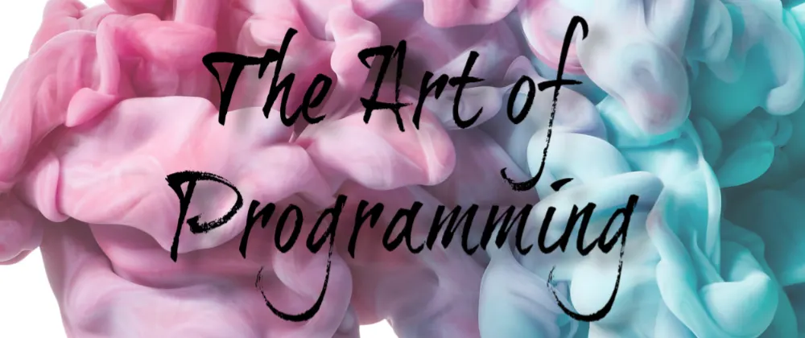

1 / 3

Caption Text
2 / 3
Caption Two
3 / 3

Caption Three
Plan your artistic activities, contracting and scheduling of artists with our module for Artistic Programming. Create a single source of truth for forthcoming programme details and build an artistic archive of the music, theatre, opera, dance, film, literature and visual arts at your venue or festival.
Store individual artists, performing groups and their member
View the performance history and planned performances at your organisation
Create a contract on the arrangement for each artist on the programme
Record which rehearsals and performances for which each artist is required/not required.
Included in Itinerary if Guest Scheduling plugin active
Event Programmer
AI system Programmer
AI pragrammer
Tools Programmer
Event Programmer
Gameplay Programmer
The Artistic Programming team plans and oversees over 2,000 performances annually across nine stages.
The Department takes charge of planning across different artforms, including seasonal producing, curating, and presentation of artists and events in the following areas: Classical, New Music, Comedy, Contemporary Music, Dance, Hip Hop Culture, International Programming, Jazz, Social Impact, and Theater.
The Artistic Programming team also manage the Mark Twain Prize and Kennedy Center Honors.
The Artistic Programming department develops a distinctive and powerful voice for the performing arts by keeping the Center's mission at the forefront of their creative programming--by placing artists from across the globe at the center of each art form and performance. The department strives to invoke inspiring and meaningful audience experiences through the performances they present, hoping to invite discussion that further collaboration, inspiration, and understanding across cultures and people around the world.
The Artistic Planning and Programming Department conceives and executes the Kennedy Center’s artistic vision through a wide and diverse range of curation, producing, and programming. Included within the Programming team are Theater, Social Impact, International Programming, Dance, Jazz, Fortas Chamber Music, Hip Hop Culture, Classical New Music, Contemporary Music, Comedy, and Broadcast Programming, as well as the Kennedy Center’s Production team and the Opera House Orchestra. The team celebrates diverse perspectives from a wide range of cultures and communities by presenting programs that offer meaningful entry points for new and diverse audiences and artists alike. As a leader in the performing arts, the Kennedy Center’s programmers actively seek outside creative partners to explore projects and partnerships that will advance the role of the Center and the arts locally, nationally, and internationally.